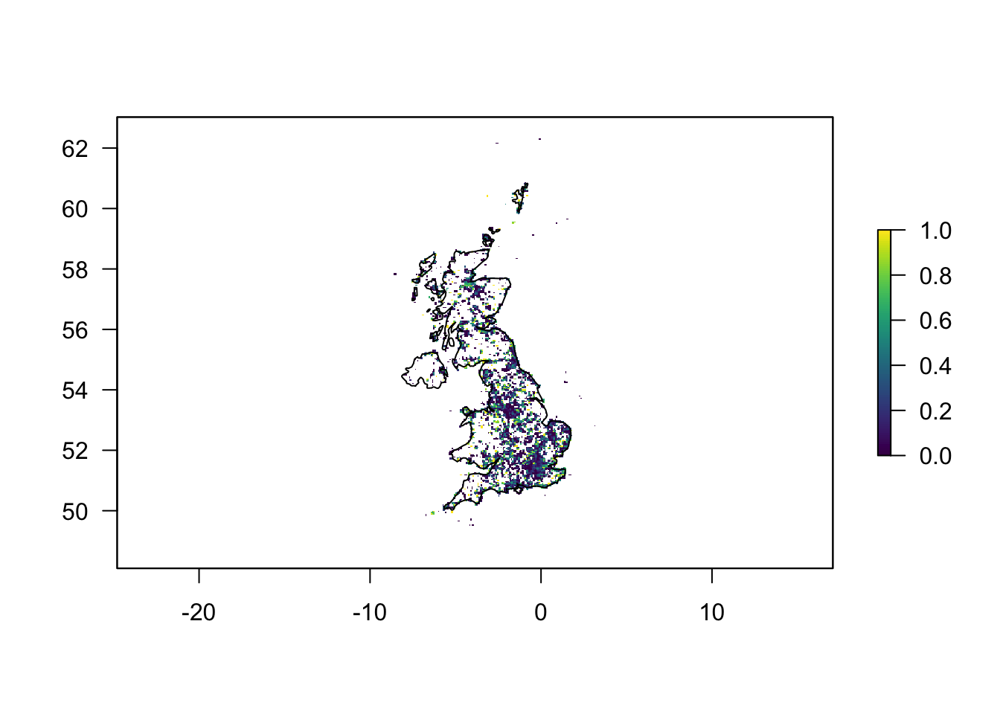
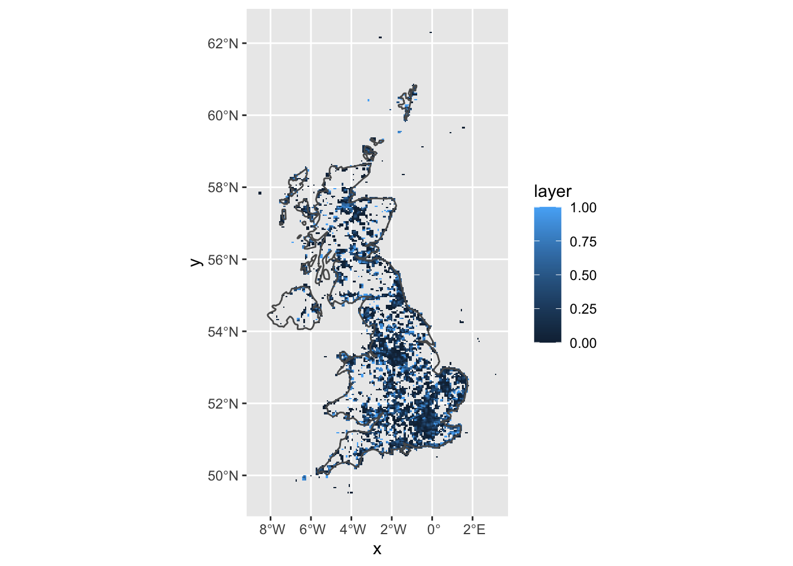

Last updated: 2021-11-22
Checks: 7 0
Knit directory: ebird_light_pollution/
This reproducible R Markdown analysis was created with workflowr (version 1.6.2). The Checks tab describes the reproducibility checks that were applied when the results were created. The Past versions tab lists the development history.
Great! Since the R Markdown file has been committed to the Git repository, you know the exact version of the code that produced these results.
Great job! The global environment was empty. Objects defined in the global environment can affect the analysis in your R Markdown file in unknown ways. For reproduciblity it’s best to always run the code in an empty environment.
The command set.seed(20211122) was run prior to running the code in the R Markdown file. Setting a seed ensures that any results that rely on randomness, e.g. subsampling or permutations, are reproducible.
Great job! Recording the operating system, R version, and package versions is critical for reproducibility.
Nice! There were no cached chunks for this analysis, so you can be confident that you successfully produced the results during this run.
Great job! Using relative paths to the files within your workflowr project makes it easier to run your code on other machines.
Great! You are using Git for version control. Tracking code development and connecting the code version to the results is critical for reproducibility.
The results in this page were generated with repository version 04dfea0. See the Past versions tab to see a history of the changes made to the R Markdown and HTML files.
Note that you need to be careful to ensure that all relevant files for the analysis have been committed to Git prior to generating the results (you can use wflow_publish or wflow_git_commit). workflowr only checks the R Markdown file, but you know if there are other scripts or data files that it depends on. Below is the status of the Git repository when the results were generated:
Ignored files:
Ignored: .DS_Store
Untracked files:
Untracked: analysis/5_extracting_light_pollution_data.Rmd
Untracked: data/.here
Untracked: data/house_sparrow_test.txt
Untracked: data/house_sparrow_test_2017.txt
Untracked: data/house_sparrow_test_sampling_2017.txt
Unstaged changes:
Modified: analysis/2_make_a_simple_occurrence_plot.Rmd
Note that any generated files, e.g. HTML, png, CSS, etc., are not included in this status report because it is ok for generated content to have uncommitted changes.
These are the previous versions of the repository in which changes were made to the R Markdown (analysis/4_drawing_a_density_map.Rmd) and HTML (docs/4_drawing_a_density_map.html) files. If you’ve configured a remote Git repository (see ?wflow_git_remote), click on the hyperlinks in the table below to view the files as they were in that past version.
| File | Version | Author | Date | Message |
|---|---|---|---|---|
| Rmd | 04dfea0 | markravinet | 2021-11-22 | add tutorial 4 |
Back in tutorial 2 we learned how to make an occurrence map. Here we’ll draw a map again but this time it will be a density map. In order to do that, we need to estimate density from our ebird sightings. This involves a little more work than just simply plotting occurrence! The aim of this tutorial is to take us through those steps.
Many of the packages we used for making the occurrence map are relevant here, but there are a couple of additional ones we need to install this time. We install them like so:
install.packages("raster")
install.packages("rgdal")
install.packages("viridis")What are these packages? raster is a spatial data package that allows the visualisation and analysis of raster files. These are essentially images where each pixel corresponds to a geographical location. A classic example would be a satellite image of a given location. rgdal is another package involved in geospatial analysis that we need in order to convert data. Finally, viridis is a package which enables a colour mapping scheme that is useful for plotting data - but especially spatial density data.
Once we’ve installed those packages, we load them all with library. We also load auk and tidyverse just in case we need them.
library(auk)
library(tidyverse)
library(sf)
library(rnaturalearth)
library(rnaturalearthdata)
library(rgeos)
library(raster)
library(rgdal)
library(viridis)The next thing we need to do is set the paths for the data files that we created at the end of tutorial 3. Remember this is our filtered sparrow occurrence and sampling data.
# set paths for ebd data
sparrow_ebd <- "./data/house_sparrow_test_2017.txt"
sparrow_sample <- "./data/house_sparrow_test_sampling_2017.txt"We’re now fully set up and ready to proceed with the next steps.
The first few functions we need to run are quite familiar already. We first need to read in our ebird data using auk functions:
# read in the ebird data
house <- read_ebd(sparrow_ebd, unique = TRUE, rollup = FALSE)However, unlike before we also need to perform something called zerofilling. As mentioned before, data is input into ebird using checklists where observers note down which species they saw or did not see. It is this checklist data, contained in the sample data from tutorial 3 that we will use for zerofilling and ultimately, to create a presence or absence score for our spatial maps. Doing the zerofilling is quite straightforward:
house_zf <- auk_zerofill(sparrow_ebd, sparrow_sample)We can compare our two objects - house and house_zf - to see the difference this has made. Look in particular at the difference in observations and the number of rows in each tibble:
# first we can compare the two objects
house
house_zf
# lets look at the observations
house_zf$observations # some will be zero - i.e. no birds recorded
house_zf$sampling_events # we can also examine the sampling events tooNext we need to combine our checklist and sample data with the collapse_zerofill function. This will provide us with the data we need to make the occurrence map.
collapse_zerofill(house_zf) Here we just ran this command as a demonstration, but we’ll actually run it for real in the next section.
For this step, we are going to ultimately extract the latitude and longitude of our species observations, convert them and then end with a dataframe we can use for plotting our map. We’ll build this command up step by step.
The first part we’re familiar with - zerofilling - yet this time we’re going to assign the output to an object.
checklists_sf <- collapse_zerofill(house_zf)Here we will combine commands using the %>% pipe command which you can find more info on here. The next step, we will extract the coordinates and convert them to the coordinate reference system we will use in our map. Remember to recall the checklists_sf object each time in order to see the differences in what is happening here.
checklists_sf <- collapse_zerofill(house_zf) %>%
# this extracts coordinates
st_as_sf(coords = c("longitude", "latitude"), crs = 4236)With our latitude and longitude transformed, we then need to do a projection on to a grid reference system, like so:
checklists_sf <- collapse_zerofill(house_zf) %>%
# this extracts coordinates
st_as_sf(coords = c("longitude", "latitude"), crs = 4236) %>%
# this projects the presence absence data across an equal area
st_transform(crs ="+proj=laea +lat_0=44 +lon_0=-71.70") If you’re checking each time, you’ll see that the main thing changing here is not the data structure, but the metainformation at the head of the data.frame that encodes the spatial data projection and specification.
Next things will get a bit trickier - we are going to extract some information on the species in the dataset.
checklists_sf <- collapse_zerofill(house_zf) %>%
# this extracts coordinates
st_as_sf(coords = c("longitude", "latitude"), crs = 4236) %>%
# this projects the presence absence data across an equal area
st_transform(crs ="+proj=laea +lat_0=44 +lon_0=-71.70") %>%
# this bit gets the species information
inner_join(ebird_taxonomy %>%
dplyr::select(species_code, scientific_name, common_name),
by = "scientific_name")Now the dataset has altered - we have taken the ebird_taxonomy data.frame and extracted the species_code, scientific_name and common_name columns (all of which should be self-explanatory) and then joined these using inner_join to our coordinate data. This is actually a bit redundant here but if we were extracting data for multiple species at once, this would allow us to separate out their data.
For the final step, we will extract the data we actually are interested in from the dataset using dplyr::select.
checklists_sf <- collapse_zerofill(house_zf) %>%
# this extracts coordinates
st_as_sf(coords = c("longitude", "latitude"), crs = 4236) %>%
# this projects the presence absence data across an equal area
st_transform(crs ="+proj=laea +lat_0=44 +lon_0=-71.70") %>%
# this bit gets the species information
inner_join(ebird_taxonomy %>%
dplyr::select(species_code, scientific_name, common_name),
by = "scientific_name") %>%
# finally we extract the data we want
dplyr::select(species_code, common_name, scientific_name, species_observed)If you look at checklists_sf now you’ll see all we have is the species names, whether or not it was observed and the latitude and longitude of the positions.
We’re nearly ready to plot our data! First we need to initialise the UK map. We do this by getting the data from the naturalearth dataset. We’ll also convert that from an sf to an st class object.
# we extract the UK map data
uk <- ne_countries(country = "united kingdom", scale = "medium", returnclass = "sf")
# we need to convert the uk data in one more step to make it plottable
uk <- uk %>% st_geometry()With this done, we need to run a few steps to make our data ready to plot. Previously with the occurence map, we plotted points. Now we’re plotting presence/absence data in pixels, so we need to convert our data to a raster format.
r_template <- raster(as(checklists_sf, "Spatial"))With presence/absence data for each pixel, we can set a resolution to estimate the mean probability of observing a species across a spatial area. This is also known as density. We set this resolution in units of metres but express it as km - here we will use 5000 or a 5km resolution.
res(r_template) <- 5000Then we extract species names - this is only really necessary if we are to plot more than one species (not the case here but I’ll show you how anyway):
species <- unique(checklists_sf$species_code)With our data, our raster format and our resolution we are now ready to calculate the density or frequency of occurence over our grid resolution. We’ll also make sure the orientation is correct for our UK map.
# calculate the frequency of occurrence
r_freq <- rasterize(checklists_sf, r_template, field = "species_observed", fun = mean)
# correct projection
r_freq2 <- projectRaster(r_freq, crs = crs(uk))In the first function, the fun = mean argument is what allows us to estimate the mean probability a species is observed. We could use other functions here - i.e. max would give the max probability, median the median and so on.
With all these steps taken, we’re now finally ready to plot. Firstly, we’ll do this in base R.
# next we plot the frequency of occurrence data
plot(r_freq2, las = 1, col = viridis(100))
# and finally we can add the outline of the UK
plot(uk, add = T)
And with ggplot2
r_freq3 <- r_freq2 %>% rasterToPoints() %>% as_tibble()
ggplot(r_freq3) + geom_tile(aes(x = x, y = y, fill = layer)) +
geom_sf(data = uk, fill = NA) + coord_sf()
sessionInfo()R version 4.1.2 (2021-11-01)
Platform: x86_64-apple-darwin17.0 (64-bit)
Running under: macOS Catalina 10.15.7
Matrix products: default
BLAS: /Library/Frameworks/R.framework/Versions/4.1/Resources/lib/libRblas.0.dylib
LAPACK: /Library/Frameworks/R.framework/Versions/4.1/Resources/lib/libRlapack.dylib
locale:
[1] en_GB.UTF-8/en_GB.UTF-8/en_GB.UTF-8/C/en_GB.UTF-8/en_GB.UTF-8
attached base packages:
[1] stats graphics grDevices utils datasets methods base
other attached packages:
[1] viridis_0.6.2 viridisLite_0.4.0 rgdal_1.5-27
[4] raster_3.5-2 rgeos_0.5-8 sp_1.4-5
[7] rnaturalearthdata_0.1.0 rnaturalearth_0.1.0 sf_1.0-3
[10] forcats_0.5.1 stringr_1.4.0 dplyr_1.0.7
[13] purrr_0.3.4 readr_2.0.2 tidyr_1.1.4
[16] tibble_3.1.5 ggplot2_3.3.5 tidyverse_1.3.1
[19] auk_0.5.1 workflowr_1.6.2
loaded via a namespace (and not attached):
[1] fs_1.5.0 lubridate_1.8.0 bit64_4.0.5 httr_1.4.2
[5] rprojroot_2.0.2 tools_4.1.2 backports_1.3.0 utf8_1.2.2
[9] R6_2.5.1 KernSmooth_2.23-20 DBI_1.1.1 colorspace_2.0-2
[13] withr_2.4.2 tidyselect_1.1.1 gridExtra_2.3 bit_4.0.4
[17] compiler_4.1.2 git2r_0.28.0 cli_3.1.0 rvest_1.0.2
[21] xml2_1.3.2 labeling_0.4.2 scales_1.1.1 classInt_0.4-3
[25] proxy_0.4-26 digest_0.6.28 rmarkdown_2.11 pkgconfig_2.0.3
[29] htmltools_0.5.2 highr_0.9 dbplyr_2.1.1 fastmap_1.1.0
[33] rlang_0.4.12 readxl_1.3.1 rstudioapi_0.13 farver_2.1.0
[37] jquerylib_0.1.4 generics_0.1.1 jsonlite_1.7.2 vroom_1.5.5
[41] magrittr_2.0.1 s2_1.0.7 Rcpp_1.0.7 munsell_0.5.0
[45] fansi_0.5.0 lifecycle_1.0.1 terra_1.4-11 stringi_1.7.5
[49] whisker_0.4 yaml_2.2.1 grid_4.1.2 parallel_4.1.2
[53] promises_1.2.0.1 crayon_1.4.2 lattice_0.20-45 haven_2.4.3
[57] hms_1.1.1 knitr_1.36 pillar_1.6.4 codetools_0.2-18
[61] wk_0.5.0 reprex_2.0.1 glue_1.5.0 evaluate_0.14
[65] modelr_0.1.8 vctrs_0.3.8 tzdb_0.2.0 httpuv_1.6.3
[69] cellranger_1.1.0 gtable_0.3.0 assertthat_0.2.1 xfun_0.28
[73] broom_0.7.10 e1071_1.7-9 later_1.3.0 class_7.3-19
[77] units_0.7-2 ellipsis_0.3.2